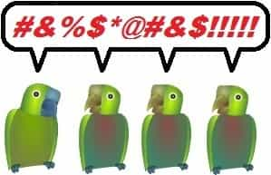
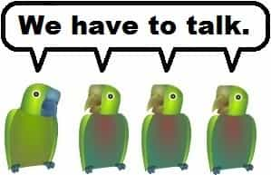

After his misadventures in sex rehab, Neil Strauss’ The Truth seems like a twisted version of Saint Augustine’s Confessions. After much hand-wringing, personal introspection, and researching relationships, he concluded that monogamy opposes human nature. If that’s true, traditional morality is an unattainable ideal. However, as soon as he mentions polyamory to his girlfriend Ingrid, what’s left of their relationship pops like a soap bubble.
First gropings
Neil idealizes Father Yod, an oddball counterculture guru with fourteen “wives”. Through extensive research—something he does frequently—he encounters concepts like compersion (it’s not a city in Persia), hypergamy, the dual mating strategy, etc. Unfortunately, he only studies Blue Pill sources. Then he begins a quest for hot bi babes—just like any naïve newcomer to polyamory.
He first attends a tantric gathering. The attendees are flabby, over-the-hill New Agers. (It’s a fairly typical experience. Hot bi babes into polyamory are called “golden unicorns” for a reason.) He tries to keep an open mind, but soon chokes up with laughter at the spiritual mumbo jumbo. The leader finally kicks him out for eating popcorn.
Later, he attends a Bliss gathering in Vegas, full of smoking hot women. Needless to say, clubs like that aren’t for mere mortals. However, Neil’s prominence and connections get him in like Flynn. His guide, who suffers from a cuck fetish, loads him up on a drug cocktail—some of it without his permission. He passes out repeatedly during sex. Still, he liked the very little he remembered.
Then Neil finds the magical synergy in the Parisian demi-monde; crossing an ocean for nookie. The participants are relatively young and attractive. Neither popcorn nor dope interferes. Undeterred (mostly) by all the swinging dicks, he has a blast.
Throughout, some interesting characters appear. The guy who drugged him is a rental sex toy vendor—yes, really. Another is a dweeby-looking polyamory authority named Pepper Mint, who reputedly banged a thousand men and women. One more is Corey Feldman, understandably morose.
The Great Mongolian Clusterfuck

He invites two women he met in Paris (one at the club) and another former prospect to join him in San Francisco. Naturally, that becomes a train wreck. Stupid arguments about car seating are merely the beginning. He spends more time sleeping on the couch than banging, because choosing one partner for the night will offend everyone else. Pro tip: write up schedules. Attempts at group negotiations are fruitless.
Everyone agrees to attend a sex club, but the outing ends disastrously. Before even starting, one of them—a wounded bird type—declares that she wants Neil all to herself: not just that night, but indefinitely. The other chicks don’t want to share either. This derails what should’ve been a fun event. After that, Harem 1.0 ends in a bang, but not the good kind. Pro tip: show leadership and be firm.
Neil blamed himself. Still, the main problems (beyond four near-strangers cohabiting, and the half-baked concept of free love itself) are inexperience and his lack of requisite firmness. He never lied; everyone knew what the arrangements would be. It’s not his fault that the chicks unilaterally started redefining the terms, got catty and jealous, and pussy-blocked their rivals.
More blunders

Some further misadventures are told in illustrations. He creates a retro-hippie commune. Unfortunately, one participant is psychotic and extremely jealous, who nearly murders him. (The deleted chapter is on Neil’s site.) Then, he has a fling with a couple of hot bi babes; one isn’t too serious, the other is a drunk. Later, he meets someone online seeking a sperm donor, but he sensibly backs out.
His new girlfriend Sage is a hot bi babe from the Vegas misadventure. That works great, until she vacations in Mexico with two of her orbiters. Now Neil gets jealous. He’s angered upon discovering that they sucked her toes and discouraged her from contacting him. Worse, on the flight back, Sage met some leather-faced director who offered an acting role. Uh oh…
Game over
He realized that after achieving all his fantasies, there’s nothing left, and that he really blew it with Ingrid. Sage, his coke-sniffing metallic-haired girlfriend with Daddy issues, dumps him by email. Depression sets in.
Neil tries cultivating nonattachment. He consults the sex rehab counselors again, who feed him Blue Pills and convince him to ghost everyone. He does different therapeutic stuff to unscrew his head, somewhat more effectively. He turns down bangs. Then Sage shows up on his doorstep, but he sends her away. Hopefully she learned a lesson about ditching people by email.
He finds that Ingrid’s available and wants him back. So the nonattachment stuff was all for the better. (He got very lucky; reuniting with lost loves usually only happens in movies, especially when a relationship ends badly.) They start a family, a happy ending following much avoidable drama.
The real truth

“King Solomon had hundreds of wives. What could possibly go wrong?”
Throughout, Neil repeatedly castigated himself, while lengthily analyzing the fallout and planning new angles. Despite the intellectualization, it’s pretty simple: he let the little head do the thinking. Unfortunately, if choosing lust and Rationalization Hamstering make people evil, I’m afraid everyone’s going to hell.
The dream he chased is fundamentally impractical. Actually, these disasters constituted exceptional results, available via wealth, prominence, good Outer Game, and California’s “anything goes” environment. For most guys, simply struggling to manage an apartment with three attractive, bickering women is an unattainable opportunity. Mere mortals don’t always get better quality than the flabby, over-the-hill New Agers.
Hot bi babes lacking jealousy are very rare. (Excluding red flags like mental instability, substance abuse, and STDs narrows the pool even further.) Hot babes exist, but even California ain’t what it used to be. Bisexual babes exist too; I’ve dated so many that I’m wondering if straight women are real. However, “lacking jealousy” remains a huge limitation. Even one man with two women—the most workable alternative dynamic—is lots of extra drama. (I could write my own novel about that.) It can happen, but polyamory is generally unstable.
It’s impractical societally on a large scale. Guys are much less willing to share. Widespread acceptability of men with multiple women would tremendously exacerbate the sexual marketplace’s already existing problems. What happens if everyone does this? Free love would become a victim of its own success.
Neil, who authored The Game, certainly understood pickup artistry. However, he extensively researched feminism-compliant counterculture sources about polyamory. His barely Purple Pilled synthesis left him blindsided. “Deplorable” sites like ROK and Chateau Heartiste far more accurately describe relationships and male-female dynamics. He delved heavily into therapy and self-help, but that too had mixed results. My own book covers Inner Game heavily for a reason, also providing considerably more realistic perspectives on multiple simultaneous relationships.
Neil explored polyamory after concluding that monogamy collides with human nature. However, so does free love; jealousy happens. Evolutionary biology created this inescapable dilemma. Still, ultimately behavior is something we choose. Libertines find conventional morality stifling, but the rules keep people from getting their fingers burnt.
Last but not least, nothing’s perfect and nobody gets everything they want.
Read More: 7 Tips For Building A Harem